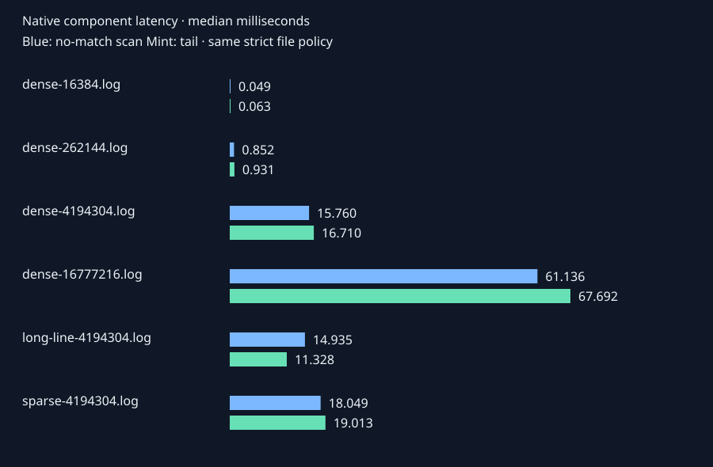

INVESTIGATION REPORTLoading
C++20 / LINUX / AI INFRASTRUCTURE
Give agents evidence.
Keep the boundary native.
An agent can propose a tool call. The C++ runtime decides what it can read, how much work it can do, and when the connection must stop.
Read-only evidence tools. No shell. No provider key needed for this demo.
01 / FOLLOW THE EVIDENCE
One incident. Three outcomes.
Success matters. So does refusing an unsupported conclusion—and rejecting a request that crosses the boundary.
Loading recorded evidence…
Expand the orchestration control trace proposals · authorization · native responses
The provider is deterministic and scripted. Hostile proposals are supplied independently of the log text. These runs test enforcement, not a live model’s susceptibility to prompt injection.
02 / MEASURE THE COST
Native, with receipts.
Raw samples, fixture hashes and build context. No language speedup claim. No filtered-out slow runs.

Bounds before bravado.
The study measures strict file opens and native analyzers separately from complete stdio scenarios. It also checks scheduler saturation, cancellation, descriptor stability and thread cleanup.
RSS belongs to the native measurement harness, including its result storage. It is not a server-only memory claim. Cancellation measurements use cooperative synthetic work.
03 / READ THE ENGINEERING
The difficult parts are below the API.
Start with the mechanisms, then inspect the tests that challenge them.
Authority follows a descriptor.
Root aliases and relative paths are resolved beneath an approved directory. Strict openat2 constraints and RAII keep reads attached to the validated object.
Read the file policy ↗A slow reader is a failure mode.
The review reproduced four blocked-peer hangs. Nonblocking writes, a two-second deadline and terminal connection failure now prevent those pipe stalls from lasting indefinitely.
Read the transport decision ↗Concurrency has an owner.
Two workers, a fixed admission cap and cooperative stop tokens. Failed transports stop admission; normal EOF drains accepted work. Worker lifetime ends with one join owner.
Inspect the scheduler ↗The evidence manifest records the exact source fingerprint for the measured native run.
04 / YOUR MACHINE, YOUR VERIFICATION
Run the same investigation.
Linux with strict openat2 and pidfd support. Build the native runtime, install the small external client, and inspect the reports.
Build prerequisites ↗cmake --preset release
cmake --build --preset release
python3 -m pip install ./agent
native-mcp-agent demo \
--server ./build/release/native-mcp-sandbox \
--output ./build/demo